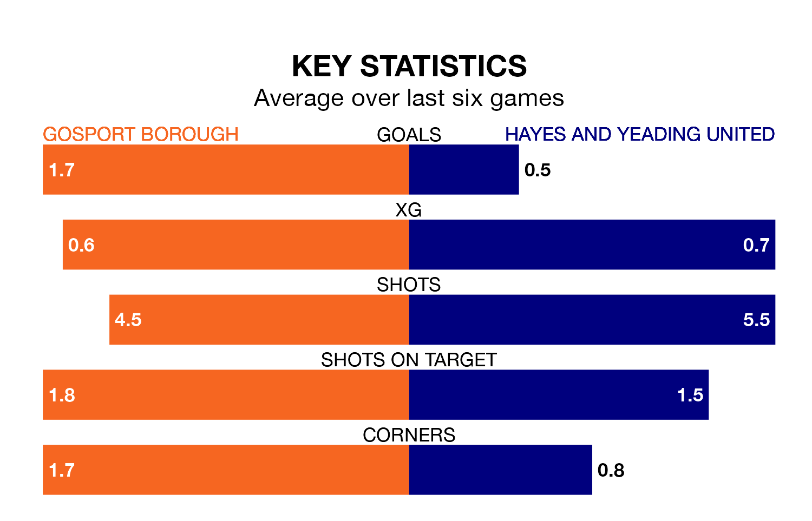

Hayes and Yeading United travel to Privett Park looking to secure a first win in nine Southern League Premier – South games against Gosport Borough on Saturday.
Hayes & Yeading have lost five and drawn three matches since they last earned three points – against Beaconsfield Town on February 10.
They face a Gosport side who have won four and drawn one over that time.
Gosport are second in the table after 38 games, of which they have won 21 and drawn eight, earning 71 points.
Hayes & Yeading are 16 places behind Borough in 18th, with nine wins and 12 draws putting them on 39 points.
With 52 goals in 37 games so far this season, United are scoring at below the league average rate with 1.4 goals per game. But they are conceding fewer than average too, letting in 58 goals at a rate of 1.6 per game.
The home side, meanwhile, are above average scorers, with 1.8 goals per game, compared to a league average of 1.7. They have conceded 1.0 goal per game.
In the last 10 years, Gosport and Hayes & Yeading have played each other on 10 occasions. Gosport won five of them, Hayes & Yeading three, and they drew twice.
On average, Gosport scored 1.6 goals and Hayes & Yeading 1.4 in those matches.
Their last meeting was on March 9, when Gosport won 3-0 away.
Gosport's last match was on April 6, a 0-0 draw against Hanwell Town.
Hayes & Yeading lost 1-0 against Dorchester Town last time out, also on April 6.
Updated: 14:47 (UTC), 09/04/24